OI Wiki · prijevod · Osnove algoritamaOI Wiki · translation · Algorithm basics
Counting sortCounting sort
Sadržaj
Potrebno predznanje: Prefiksne sume
Napomena
Ova stranica ne opisuje radix sort.
Ova stranica kratko predstavlja counting sort (sortiranje brojanjem).
Definicija
Counting sort (sortiranje brojanjem) algoritam je sortiranja koji radi u linearnom vremenu.
Postupak
Counting sort radi tako da koristi dodatni niz \(C\), u kojem je \(i\)-ti element broj elemenata niza \(A\) čija je vrijednost jednaka \(i\); zatim pomoću niza \(C\) elemente niza \(A\) raspoređuje na ispravna mjesta.1
Postupak se sastoji od tri koraka:
- izbroji koliko se puta pojavljuje svaki broj;
- izračunaj prefiksne sume broja pojavljivanja;
- pomoću prefiksnih suma pojavljivanja, zdesna nalijevo, odredi rang svakog broja.
Zašto se računaju prefiksne sume
Rekonstrukcija prema frekvencijama može sortirati čiste ključeve i obraditi duplikate; ali ako treba stabilno preurediti izvorne zapise, položaj u izlazu određuje se prefiksnim sumama frekvencija.
Računajući prefiksnu sumu svakog člana dodatnog niza \(C\) i kombinirajući je s vrijednošću člana, svakom od jednakih elemenata možemo dodijeliti jedinstven rang:
vrijednost člana niza \(C\) jednaka je broju ponavljanja tog ključa, a njegova prefiksna suma jednaka je rangu posljednjeg od tih jednakih elemenata.
Ako elemente raspoređujemo u obrnutom redoslijedu niza \(A\), sortirani niz očito zadržava izvorni poredak niza \(A\) (za jednake ključeve), tj. dobivamo stabilan algoritam sortiranja.

Svojstva
Stabilnost
Counting sort je stabilan algoritam sortiranja.
Vremenska složenost
Vremenska složenost counting sorta je \(O(n+w)\), gdje \(w\) označava veličinu raspona vrijednosti podataka koji se sortiraju.
Implementacija
Pseudokod
#include <cstring>
constexpr int MAXN = 1010;
constexpr int MAXW = 100010;
int cnt[MAXW], b[MAXN];
int* counting_sort(int* a, int n, int w) {
memset(cnt, 0, sizeof(cnt));
for (int i = 1; i <= n; ++i) ++cnt[a[i]];
for (int i = 1; i <= w; ++i) cnt[i] += cnt[i - 1];
for (int i = n; i >= 1; --i) b[cnt[a[i]]--] = a[i];
return b;
}
def counting_sort(a, n, w):
b = [0] * (n + 1)
cnt = [0] * (w + 1)
for i in range(1, n + 1):
cnt[a[i]] += 1
for i in range(1, w + 1):
cnt[i] += cnt[i - 1]
for i in range(n, 0, -1):
b[cnt[a[i]]] = a[i]
cnt[a[i]] -= 1
return b
Literatura i bilješke
Contents
Prerequisites: Prefix sums
Reminder
This page is not about radix sort.
This page briefly introduces counting sort.
Definition
Counting sort is a linear-time sorting algorithm.
Procedure
Counting sort works by using an extra array \(C\), whose \(i\)-th element is the number of elements in the array \(A\) to be sorted whose value equals \(i\); then it uses the array \(C\) to place the elements of \(A\) into their correct positions.1
The process consists of three steps:
- count how many times each number occurs;
- compute the prefix sums of the counts;
- using the prefix sums of the counts, from right to left, compute the rank of each number.
Why prefix sums are computed
Rebuilding from the frequencies can sort pure keys and handle duplicates; but to stably rearrange the original records, the output positions are determined from the prefix sums of the frequencies.
By computing the prefix sum of each entry of the extra array \(C\) and combining it with the entry's value, we can assign a unique rank to each of the duplicate elements:
the value of an entry of \(C\) is the number of duplicates with that key, and its prefix sum is the rank of the last of those duplicates.
If we place the elements in reverse order of \(A\), the sorted array clearly keeps the original order of \(A\) (for equal keys), i.e. we obtain a stable sorting algorithm.
Properties
Stability
Counting sort is a stable sorting algorithm.
Time complexity
The time complexity of counting sort is \(O(n+w)\), where \(w\) is the size of the range of the values to be sorted.
Implementation
Pseudocode
#include <cstring>
constexpr int MAXN = 1010;
constexpr int MAXW = 100010;
int cnt[MAXW], b[MAXN];
int* counting_sort(int* a, int n, int w) {
memset(cnt, 0, sizeof(cnt));
for (int i = 1; i <= n; ++i) ++cnt[a[i]];
for (int i = 1; i <= w; ++i) cnt[i] += cnt[i - 1];
for (int i = n; i >= 1; --i) b[cnt[a[i]]--] = a[i];
return b;
}
def counting_sort(a, n, w):
b = [0] * (n + 1)
cnt = [0] * (w + 1)
for i in range(1, n + 1):
cnt[a[i]] += 1
for i in range(1, w + 1):
cnt[i] += cnt[i - 1]
for i in range(n, 0, -1):
b[cnt[a[i]]] = a[i]
cnt[a[i]] -= 1
return b